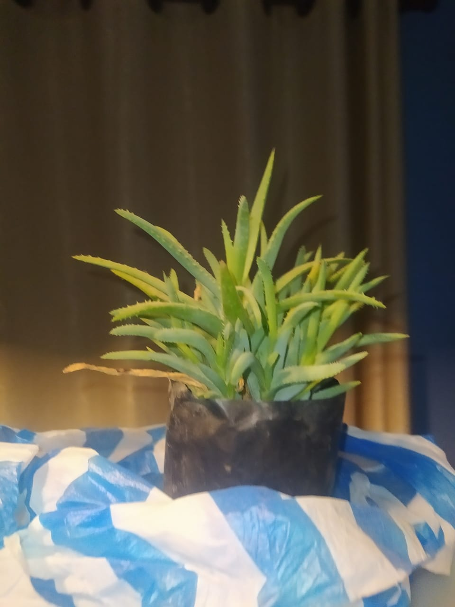

La historia de rodrigo
la historia de rodrigo es humilde y sencilla ya que la plante cuando sufria de acne en la cara
no toleraba que mis amigos de curso en secundaria me vieran raro solo por eso nunca lo entendi pero ahora los
veo y nose que sentir rodrigo esta ya casi 1 año conmigo falta mucho mas para que cresca pero de el nacio esto
de querer cambiar de ponen un alto a la comodidad y de hacer algo que nadie hace el INTENTO
